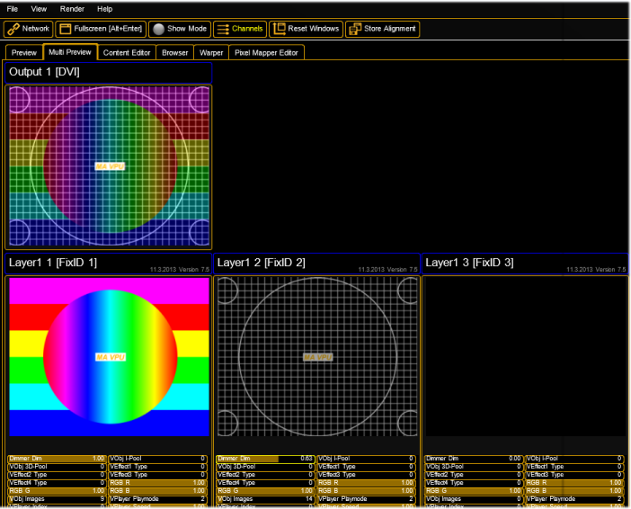

After starting the program an empty show will be opened or if connected with a desk or onPC the show will be loaded. The surface should look like this:

As already known from other applications, the program surface is divided into several parts:
| Menu Bar | ||
| Toolbar | ||
| Preview Multi Preview Content Editor Browser Warper Pixel Mapper | ||
|
Overview window for example shows images and videos of the channel functions or the LED panels in the Pixel Mapper
|
||
| Status bar |